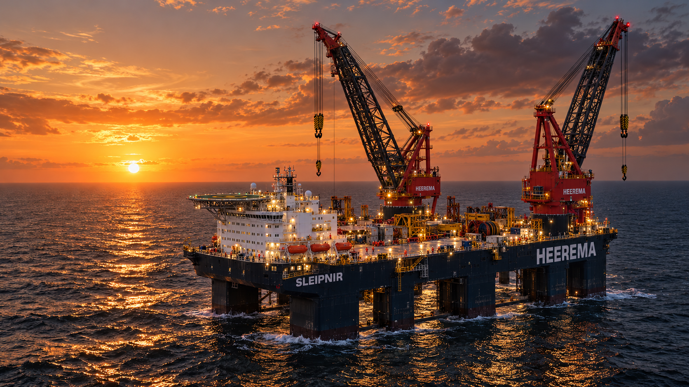

Wat we doen
Diensten
TJ Enterprise is een onafhankelijk bedrijf dat offshoreplatformen bouwt. Onze projectervaring strekt zich uit over offshore olie & gas, windenergie, maritieme constructies en industriële projecten.
TJ ENTERPRISEOFFSHORE PLATFORMBOUW
Wat we doen
Diensten in het kort.
Ontdek onze kernactiviteit en de sectoren waarin onze projectervaring ligt.
Bekijk projectervaring01Olie & gasOffshoreplatformen, FPSO’s en subsea-ontwikkelingen.5 projecten 02MaritiemSchepen, zwaar materieel en offshore constructies.2 projecten 03Offshore windWindparken, fundaties en offshore energie-infrastructuur.5 projecten 04DefensieTechnische projecten voor maritieme en defensiegerelateerde toepassingen.1 project 05PetrochemieIndustriële installaties en procesinfrastructuur.1 project
Onze focus
Een heldere scope.
01Offshore platformbouw
Onafhankelijke bouw van offshoreplatformen voor projecten in de olie- en gassector.
02Offshore windOffshore windparken vragen om grootschalige constructies, fundaties en infrastructuur op zee.
03Maritieme & industriële projectenNaast offshoreplatformen omvat de projectervaring ook scheepsconversies, petrochemische installaties en maritieme constructies.